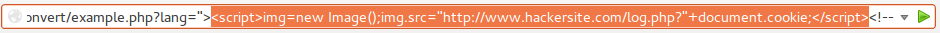
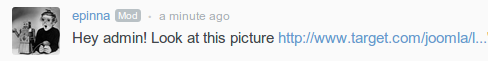

Breaking
Joomla!
Joomla Day 2013, Napoli
Emilio Pinna 2013
Perchè
Attaccano il mio sito?
Siti vulnerabili facili da localizzare
Chi
Attacca il mio sito?
Cracker s.m.
/ˈkrækə(r)/
Colui che si ingegna per eludere le protezioni di un sistema informatico allo scopo di trarne profitto.
Ethical Hacker
Cracker
Joomla
è vulnerabile?
Cms compromessi
Fonte: StopBadware - Compromised Websites 2011-2012
Massa critica
Oltre 35 milioni di download
Compromesso tra facilità d'uso, estensione e sicurezza
A portata di utenti senza particolari conoscenze tecniche
Security
Core
Estensioni
JSST
XSS 34,6%
La applicazione web riceve dal browser utente dei dati che restituisce allo stesso senza prima validarli e ripulirli
Attacchi
Session Hijacking Mallory attacca Alice


XSS disclosures
Info Disclosure 25,3%
La applicazione web rivela informazioni di sistema o di debug che possono aiutare l'attaccante a formulare un piano d'attacco
SQL injection 18,5%
SELECT * FROM utenti WHERE nome='Emilio' AND password='MyPassword'
SELECT * FROM utenti WHERE nome='' OR '1'='1';//' AND password='MyPassword'
SQL Injections disclosures
file upload 5,3%
La applicazione web non limita correttamente il caricamento dei file, permettendo l'esecuzione di codice malevolo sul server
Upload folder escape
Upload come '/var/www/webroot/backdoor.php', '../../backdoor.php'
Extensions white-list bypass
Upload come 'backd.pHP', 'backd.php.', 'backd.jpg.php', 'backd.php '
Content-Type Filter bypass
Upload 'backdoor.php' con HTTP header 'Content-Type: image/jpeg'
File type recognizer bypass
Appendere a un file GIF con header corretto del codice malevoloGIF89a<?php echo("SYSTEM HACKED!");File upload disclosures
Altro 16,2%
Qualche consiglio finale
Mantieni il tuo software aggiornato
Segui lo sviluppo del software che usi
Scegli hosting provider di qualità
Diventa amministratore